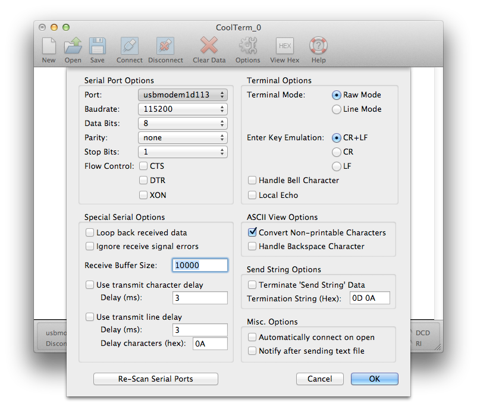
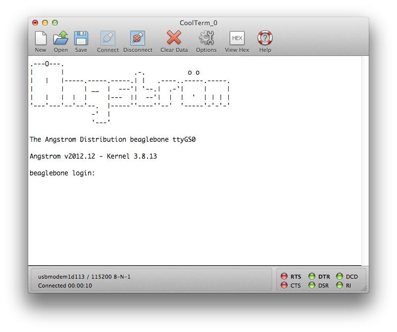

Bootstrapping the BeagleBone Black
Starting with a new board the first step is to plug the board into your laptop using the mini-USB cable provided. The BeagleBone has two USB ports, a full sized USB-A port, and a mini-USB port. The mini port is located on the reverse side of the board near the Ethernet jack.
The board should boot and you should see a solid blue light next to the 5V power jack. When startup is completed, a new mass storage device called BEAGLEBONE should appear on your desktop.
Open up the mass storage device and click on the START.htm file to open it in a browser. You should probably read through this file to familiarise yourself with the BeagleBone's capabilities.
NOTE: Despite appearing similar the port on the opposite side of the board from the full sized USB-A jack is a mini-HDMI port, not a micro USB port as it might appear at first glance. You should use the mini USB port on the underside of the board to connect the BeagleBone to your computer.
NOTE: The board uses the same power supply as the previous BeagleBone. 5VDC, 1A, 2.1mm, center positive. The power supply is not supplied with the board. However if you are going to configure the board to use a WiFi adaptor you should use a supply with a 2A rating otherwise you'll get intermittent crashes due to brown outs.
Installing the Operating System
The main difference from the Raspberry Pi for setup is that the BeagleBone ships with the Angstrom Linux distribution and boots from onboard flash memory. That means we don't have to up do an initial OS installation before talking to the board. However, it's advisable to go ahead and update the OS before continuing in any case.
Downloading the Operating System
Download the latest image of the Angstrom Distribution. You want the latest image for the BeagleBone Black, marked as eMMC flasher.
The image comes as a .xz file. You can install the XZ Utils which will let you unzip the compressed archive by using MacPorts or Homebrew.
xz -d BBB-eMMC-flasher-2013.06.20.img.xz
After decompression is should be around 3.4GB, so you will need a micro SD card at least 4GB in size to handle the image. Go ahead and insert the microSD card in its adaptor into your Macbook.
Open up a Terminal window and type df -h, remember the device name for your micro SD Card. In my case it's /dev/disk1. We'll need to use the raw device, /dev/rdisk1.
Filesystem Size Used Avail Capacity iused ifree %iused Mounted on
/dev/disk0s2 699Gi 367Gi 332Gi 53% 96214802 86992771 53% /
devfs 206Ki 206Ki 0Bi 100% 714 0 100% /dev
map -hosts 0Bi 0Bi 0Bi 100% 0 0 100% /net
map auto_home 0Bi 0Bi 0Bi 100% 0 0 100% /home
/dev/disk1s1 59Gi 33Gi 26Gi 57% 8739054 6768902 56% /Volumes/SD Card
Unmount the card,
sudo diskutil unmount /dev/disk1s1
rather than ejecting it by dragging it to the trash. Then in the Terminal change directory to your downloads folder and type
sudo dd bs=1m if=BBB-eMMC-flasher-2013.06.20.img of=/dev/rdisk1
if the above command report an error "dd: bs: illegal numeric value", change bs=1m to bs=1M. The card should automatically remount when dd is done.
Eject the card with the command,
sudo diskutil eject /dev/rdisk1
Flashing the BeagleBone Black

Power the BeagleBone Black down and locate the "User Boot" button. It's located on the top side of the board, directly above the micro SD card slot which is located on the reverse side along with the mini and micro USB sockets.
{kind=link}
Insert the micro SD card in the slot and, whilst holding the "User Boot" button down, plug the board into mini-USB connector. Hold the button down until you see the bank of 4 LEDs light up for a few seconds. You can now release the button.
It will take anywhere from 30 to 45 minutes to flash the image onto the on-board flash storage. Once done, the bank of 4 LEDs near the Ethernet jack will all light up and stay lit up. Power down the board at this point.
Installing the Drivers
The BeagleBone Black comes with both Network and Serial drivers for Mac OS X. The first gives you network-over-USB access to your BeagleBone, the second direct serial access. You'll need both sets of drivers.
Plug the board into your computer using the USB cable, wait while the board boots. Open up the BEAGLEBONE volume and click on the START.htm file, go to Step #2 in the file.
Installing the Network Driver
Grab the Network (HoRNDIS-rel4.pkg) driver file from the BeagleBone's mass storage device by clicking on the link in the START.htm file. Install the driver on your Mac by clicking on the pkg file and following the instructions.
After installation you should at this point be able to access the onboard web server of the BeagleBone Black over the USB cable by going to http://192.168.7.2/ in a browser.
NOTE: In some cases you may not be able to directly access the board using SSH at this point. There seems to be a problem in some versions of the stock image that causes some boards to fail to bring up the SSH server properly.
Installing the FTDI Serial Driver
Grab the Serial (FTDISer.dmg) driver file from the BeagleBone's mass storage device by clicking on the link in the _START.htm file. Install the driver on your Mac by opening the dmg file and clicking on the enclosed pkg file and following the instructions.
NOTE: The enclosed driver is a patched version of the stock FTDI drivers. Even if you've installed FTDI serial drivers before you need to follow this step. The BeagleBone won't be accessible otherwise.
Connecting to the BeagleBone Black
There are four methods to connect to the board: USB Serial, FTDI Serial, TCP over USB and Ethernet.
NOTE: When you connect to the board the default root password is blank so just hit return to login to the board.
Connecting via USB Serial
Several /dev/tty.usbmodem* devices should be present when the board is plugged in via the mini-USB cable.

Open up CoolTerm or a similar program and you can connect to your board at 115,200 8-N-1 (Local Echo should be off) on one of these ttys offered by the board. Of the five offered by the board,
crw-rw-rw- 1 root wheel 18, 22 4 Sep 22:43 /dev/tty.usbmodem11
crw-rw-rw- 1 root wheel 18, 8 4 Sep 20:11 /dev/tty.usbmodem1d111
crw-rw-rw- 1 root wheel 18, 24 4 Sep 22:43 /dev/tty.usbmodem1d113
crw-rw-rw- 1 root wheel 18, 12 4 Sep 20:12 /dev/tty.usbmodem6
crw-rw-rw- 1 root wheel 18, 18 4 Sep 20:14 /dev/tty.usbmodem9
only /dev/tty.usbmodem1d113 connected for me. Your milage may vary at this point.

Connecting via FTDI Serial
Alternatively you can use a 3.3V FTDI-to-USB cable to connect to the debug (J1) header block. Pin 1 on the cable is the black wire and connects to pin 1 on the board, the pin with the white dot next to it.
Open up CoolTerm again and you can connect to your board at 115,200 8-N-1 (Local Echo should be off) via the usbserial port offered by the cable, e.g.
crw-rw-rw- 1 root wheel 18, 12 31 May 20:40 /dev/tty.usbserial-FTE4XVKD
While I've had this method up and working, I've had intermittent luck with it - USB Serial seems to be more reliable once you have the FTDI drivers installed and working on your Mac.
Connecting via network over USB
Plug the BeagleBone back into the mini-USB cable connected to your Mac, and wait for it to boot back up. When it has finished booting, you should be able to once again reach the onboard webpages at http://192.168.7.2/ in your browser, but you should also be able to SSH to the board,
ssh root@192.168.7.2
root@192.168.7.2's password:
root@beaglebone:~#
Connecting via the local network
Plug an Ethernet cable into the jack on the board. After a moment the two lights on the jack (green and yellow) should go live and indicate that it is on the network. You can either login to your board via one of the methods above to find out what its IP address is, or check your router.
root@beaglebone:~# ifconfig
eth0 Link encap:Ethernet HWaddr C8:A0:30:AF:C2:18
inet addr:192.168.1.90 Bcast:192.168.1.255 Mask:255.255.255.0
inet6 addr: fe80::caa0:30ff:feaf:c218/64 Scope:Link
UP BROADCAST RUNNING MULTICAST MTU:1500 Metric:1
RX packets:1843 errors:0 dropped:1 overruns:0 frame:0
TX packets:83 errors:0 dropped:0 overruns:0 carrier:0
collisions:0 txqueuelen:1000
RX bytes:150073 (146.5 KiB) TX bytes:12398 (12.1 KiB)
Interrupt:56
lo Link encap:Local Loopback
inet addr:127.0.0.1 Mask:255.0.0.0
inet6 addr: ::1/128 Scope:Host
UP LOOPBACK RUNNING MTU:65536 Metric:1
RX packets:4 errors:0 dropped:0 overruns:0 frame:0
TX packets:4 errors:0 dropped:0 overruns:0 carrier:0
collisions:0 txqueuelen:0
RX bytes:280 (280.0 B) TX bytes:280 (280.0 B)
usb0 Link encap:Ethernet HWaddr 06:74:70:BE:E7:97
inet addr:192.168.7.2 Bcast:192.168.7.3 Mask:255.255.255.252
UP BROADCAST RUNNING MULTICAST MTU:1500 Metric:1
RX packets:4688 errors:0 dropped:0 overruns:0 frame:0
TX packets:4537 errors:0 dropped:0 overruns:0 carrier:0
collisions:0 txqueuelen:1000
RX bytes:316153 (308.7 KiB) TX bytes:675250 (659.4 KiB)
If your router is capable you might want to configure it so that the BeagleBone's IP address is fixed in future and that it's got a local name that you can use rather than a raw IP address.
Updating the Operating System
NOTE: To update the Operating System you have be connected using the local network method (using an Ethernet cable), otherwise the BeagleBone won't be able to reach the Internet to download new software.
Despite installing the latest image, we should upgrade the installed packages to the latest versions. Go ahead and login to BeagleBone via the local network.
Before we update the operating system you should add a default nameserver in the /etc/resolv.conf file as updating the kernel can cause the BeagleBone to have DNS problems. We can work around this by adding an extra nameserver to /etc/resolv.conf as follows,
cat <<EOF >>/etc/resolv.conf
nameserver 8.8.8.8
EOF
Then go ahead and type,
opkg update
then
mkdir /home/root/tmp
opkg -t /home/root/tmp upgrade
This will take some time. You might want to go make a cup of coffee and maybe another grilled cheese sandwich. After the upgrade is finished reboot the BeagleBone before proceeding, and reconnect.
NOTE: The BeagleBone Black is still under heavy development and as a result the repositories can be somewhat unstable. This stage can therefore sometimes generate a lot of errors depending on the state of the repositories.
Enabling NTP
The BeagleBone ships with no ntp installed, and no battery backed up clock. That means that the date is set on boot to Jan 1 2000. This causes all sort of problems, including making SSL certificates invalid.
We want to install ntp,
okpg install ntp
Next, find a NTP server that is close to your location. We need to do this as it is not a good idea to use a NTP root server. Go to http://www.pool.ntp.org and find servers in your zone. I'm in the United Kingdom so I want to use,
server 0.uk.pool.ntp.org
server 1.uk.pool.ntp.org
server 2.uk.pool.ntp.org
server 3.uk.pool.ntp.org
Replace the default /etc/ntp.conf file with the following,
#ntp configuration file
# The driftfile must remain in a place specific to this machine
driftfile /etc/ntp.drift
logfile /var/log/ntpd.log
# NTP Servers for United Kingdom from www.pool.ntp.org
server 0.uk.pool.ntp.org
server 1.uk.pool.ntp.org
server 2.uk.pool.ntp.org
server 3.uk.pool.ntp.org
# Using local hardware clock as fallback
# Disable this when using ntpd -q -g -x as ntpdate or it will sync to itself
# server 127.127.1.0
# fudge 127.127.1.0 stratum 14
# Defining a default security setting
restrict 192.168.1.0 mask 255.255.255.0 nomodify notrap
Next you need to set your local time, again mine is in the United Kingdom. By default the BeagleBone is in UTC, so
rm /etc/localtime
ln -s /usr/share/zoneinfo/Europe/London /etc/localtime
If you're not in the United Kingdom drill down into the /usr/share/zoneinfo/ directory structure to find your local time file.
Now go ahead and setup the ntp service,
systemctl enable ntpdate.service
systemctl enable ntpd.service
You now need to go ahead and edit the /lib/systemd/system/ntpdate.service file, changing the line
ExecStart=/usr/bin/ntpdate-sync silent
to read
ExecStart=/usr/bin/ntpd -q -g -x
since the BeagleBone doesn't have a time-of-year (TOY) chip to maintain the time during periods when the power is off, and if we don't do this ntp would assume something is terribly wrong and shuts itself down.
You now need to restart your BeagleBone_ to get ntp working.
Fixing Git
You'll need to configure your Git identity before checking out the source otherwise things won't go smoothly,
git config --global user.name "Alasdair Allan"
git config --global user.email alasdair@babilim.co.uk
however there is also a problem with SSL connections and certificates for Git. Go ahead and set the following options,
git config --global http.sslVerify true
git config --global http.sslCAinfo /etc/ssl/certs/ca-certificates.crt
git config --global http.sslCApath /etc/ssl/certs/ca-certificates.crt
which should fix things and allow us to clone from https repositories.
NOTE: This fix doesn't always seem to work depending on the state (updates/upgrades) of the OS at the time. It's possible that Git is using gnutls rather than openssl which is more fussy about the state of order of chained certificates in the certificates file, and I'm still poking around to see if I can get it in better order. If this doesn't work for you I'd recommend turing sslVerify off for now, although if you do so you should be aware of the security implications of doing so before proceeding.
Installing the Python Compiler
The BeagleBone doesn't come with the Python compiler, which is need for Node to build, so
opkg install python-compiler
before continuing.
NOTE: You may get an post install error for the "bonescript" package. We can probably ignore this problem for now as we aren't using bonescript.
Installing Node.js
Go ahead and checkout Node.js
git clone https://github.com/joyent/node.git
change directory and switch to v0.10.12 release.
cd node
git checkout v0.10.12 -b v0.10.12
Now go ahead and build,
./configure --without-snapshot
make
This will take a long time, so go make a coffee or a toasted sandwich.
Now go ahead and install node and npm,
make install
You might want to install nodewiki at this point,
npm install -g nodewiki
Installing Node Version Manager
Go ahead and install the node version manager (nvm),
git clone git://github.com/creationix/nvm.git ~/.nvm
echo ". ~/.nvm/nvm.sh" >> ~/.bashrc
. ~/.nvm/nvm.sh
make our version of Node the default
nvm alias default v0.10.12
Installing node-gyp
We might also need node-gyp the Node.js native addon build tool
git clone https://github.com/TooTallNate/node-gyp.git
cd node-gyp
npm install -g node-gyp
this will be needed if we run into problems and need to rebuild any add on modules with code changes.
Installing Other Dependances
We'll also need some other libraries that aren't installed by default in on the BeagleBone. You should go ahead and install these now,
opkg install libpcap-dev
opkg install sqlite3
Unlike the Raspberry Pi, the stock BlueZ installed on the BeagleBone is 4.101. This is the version we need for the noble library used by the steward, so no special steps are needed to install BlueZ on the BeagleBone
NOTE: You may get an post install error for the "bonescript" package. We can probably ignore this problem for now as we aren't using bonescript.
Installing the Steward
Check out the steward from its Git repository,
git clone https://github.com/TheThingSystem/steward.git
cd steward/steward
Delete the node_modules directory if it exists, as the depending on the last build these may be for OS X,
rm -rf node_modules
As the node.js mdns package currently doesn't build on the BeagleBone Black due to issues with the avahi-compat package. Go ahead and edit the package.json file in your favourite editor and remove the lines that says,
, "mdns" : "git://github.com/TheThingSystem/node_mdns.git"
, "eureka-dongle" : "git://github.com/TheThingSystem/eureka-dongle.git"
, "airplay" : "git://github.com/TheThingSystem/node-airplay.git"
this is the mdns package itself, and the packages for the Chromecast and the Apple TV which need mdns to function correctly.
However mdns support removes some other third party modules that would normally be installed as dependences but that are also needed by the steward to run, you'll therefore need to add in the following lines into the package.json file,
, "pkginfo" : "0.3.0"
, "underscore" : "1.5.1"
, "cycle" : "1.0.2"
, "colors" : "0.6.2"
, "async" : "0.2.9"
The go ahead and build and install the libraries,
npm install -l
NOTE: If you get an error "dnssd.h: No such file or directory" error at this stage you have forgotten to remove the mdns module from the package.json file._
This will definitely take a while. Go make coffee.
After the installation has been completed you'll need to go into the nodemodules/_ directory and rebuild the node_sqlite3 module by hand,
cd node_modules/
rm -rf sqlite3
git clone git://github.com/developmentseed/node-sqlite3.git sqlite3
cd sqlite3
./configure
make
npm install -l
NOTE: If you don't rebuild sqlite3 by hand you'll get a "Error: Cannot find module '../build/Release/nodesqlite3.node'" error when the steward starts._
Disabling Chromecast and AppleTV
Since we've disabled mdns and removed support for both the Apple TV and Chromecast from the steward we have to go ahead and disable the drivers for these devices. Add the following lines at the top of both devices/devices-media/media-video-appletv.js and devices/devices-media/media-video-chromecast.js
exports.start = function() {};
return;
Starting Bluetooth LE
Unlike the Raspberry Pi the BeagleBone Black comes with BlueZ 4.101 installed. However by default the connman service on the BeagleBone is set up to stop you bringing your Bluetooth device up, you'll need to edit the /var/lib/connman/settings file to enable Bluetooth,
[global]
Timeservers=0.angstrom.pool.ntp.org;1.angstrom.pool.ntp.org;2.angstrom.pool.ntp.org;3.angstrom.pool.ntp.org
OfflineMode=false
[Wired]
Enable=true
[WiFi]
Enable=true
[Bluetooth]
Enable=true
The go ahead and restart connman using systemctl,
systemctl restart connman.service
or alternatively reboot your BeagleBone to restart the service.
Manually starting the bluetooth deamon
Make sure your Bluetooth 4.0 USB adaptor is plugged into the Pi, then type
hciconfig
you should see something like this,
hci0: Type: BR/EDR Bus: USB
BD Address: 00:1A:7D:DA:71:0C ACL MTU: 310:10 SCO MTU: 64:8
DOWN
RX bytes:467 acl:0 sco:0 events:18 errors:0
TX bytes:317 acl:0 sco:0 commands:18 errors:0
This shows that the device is in a down state. To bring it up you can issue the following command,
sudo hciconfig hci0 up
then type
hciconfig
and you should see something more like this,
hci0: Type: BR/EDR Bus: USB
BD Address: 00:1A:7D:DA:71:0C ACL MTU: 310:10 SCO MTU: 64:8
UP RUNNING PSCAN
RX bytes:979 acl:0 sco:0 events:43 errors:0
TX bytes:910 acl:0 sco:0 commands:43 errors:0
Just to check things are working correctly type,
sudo hcitool lescan
and you should see any Bluetooth LE peripherals that are within range, e.g.
LE Scan ...
78:C5:E5:6C:D5:EA (unknown)
78:C5:E5:6C:D5:EA Hone
Hit ^C to stop the scan. You can now start the bluetoothd daemon by typing,
bluetoothd
or if you want to attach the log interface to the current console do this with,
bluetoothd -n
Instructions for starting the Steward
In the steward directory type
./run.sh
Then follow these instructions for starting the steward.